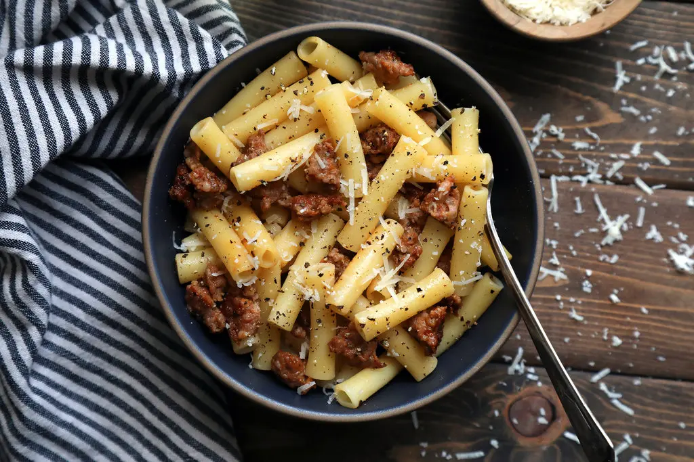

Pasta with White Sausage Sauce

Pasta and sausage are a combination that usually suggests a dense, heavy tomato sauce. But it can also mean the very opposite. Sausage, used in small amounts, can contribute to a relatively light, almost delicate pasta sauce. In fact, sausage is a gift to the minimalist cook - it comes already seasoned, and its seasoning can be used to flavor whatever goes with it.
2 tbspbutter1 lbitalian sausages1 cupwhite wine or water1 lbcut pasta, like ziti, penne1 cupParmesan cheese- Salt and pepper to taste
Bring a large pot of salted water to a boil for the pasta.
Put the butter in a medium skillet over medium-low heat. As it melts, crumble the sausage meat into it, making the bits quite small, ½ inch or less. When the meat has finished browning, add the liquid, and adjust the heat so that the mixture simmers gently.
Cook the pasta until it is tender but not at all mushy. Reserve about ½ cup of the pasta cooking water.
Drain the pasta, and dress with the sauce, adding a little of the reserved cooking liquid if necessary. Toss with salt, pepper and Parmesan, and serve.